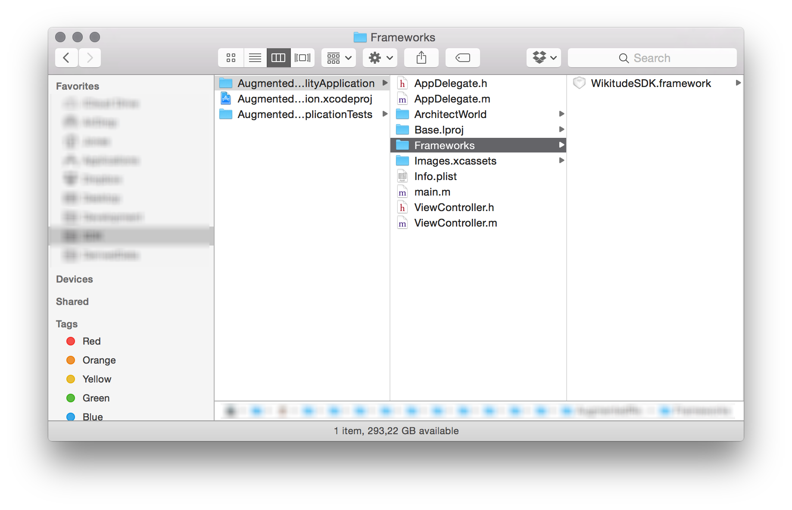
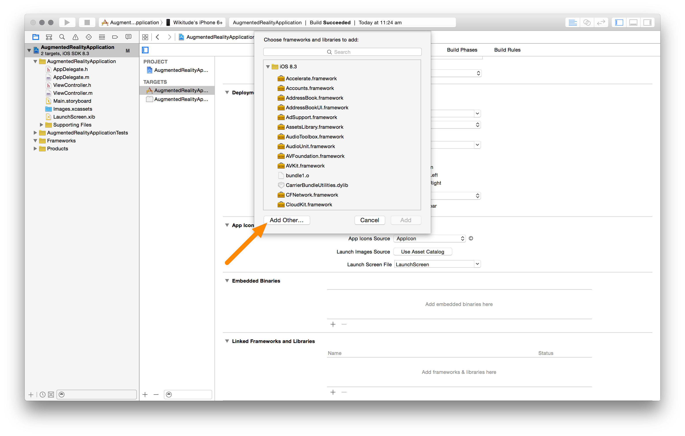
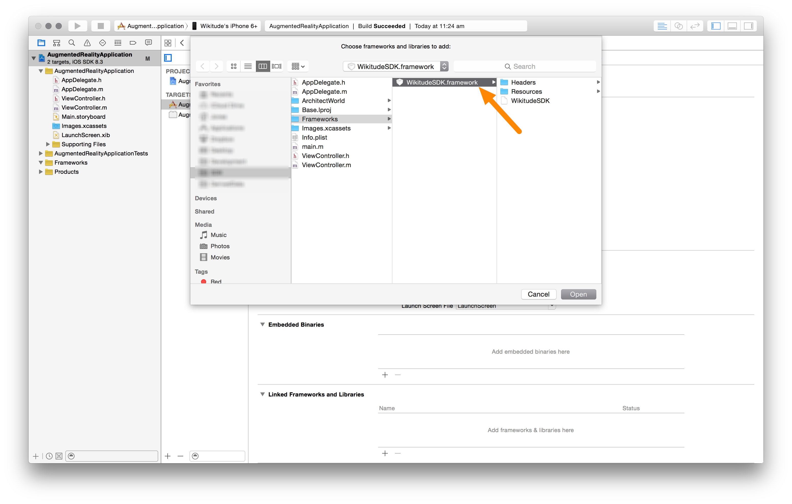
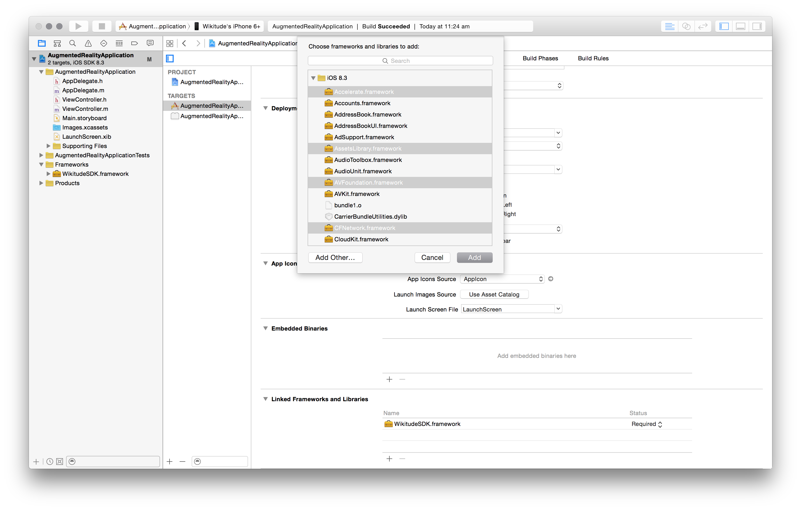
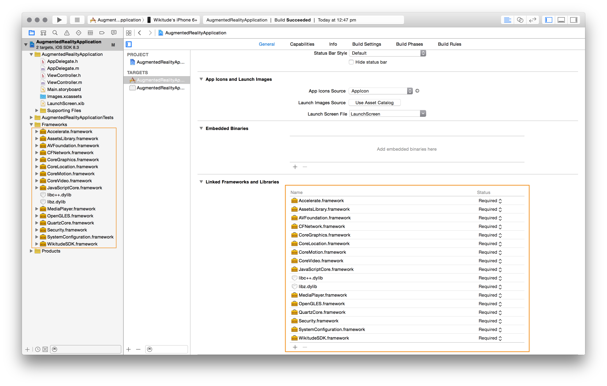
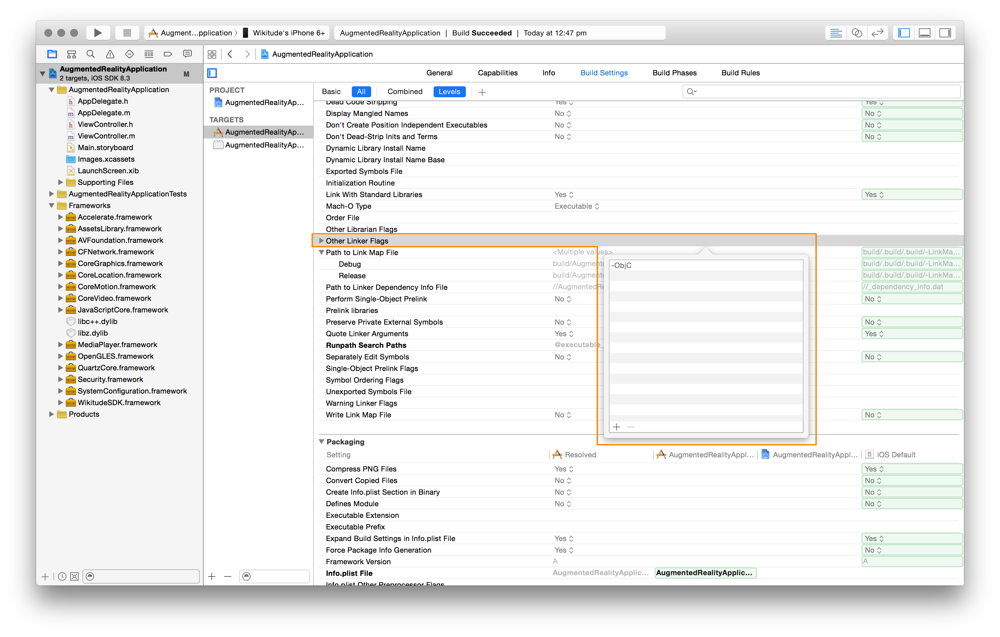
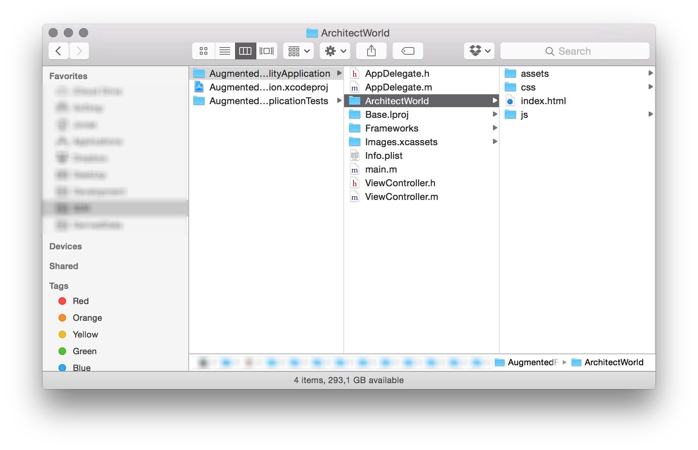
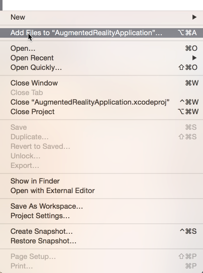
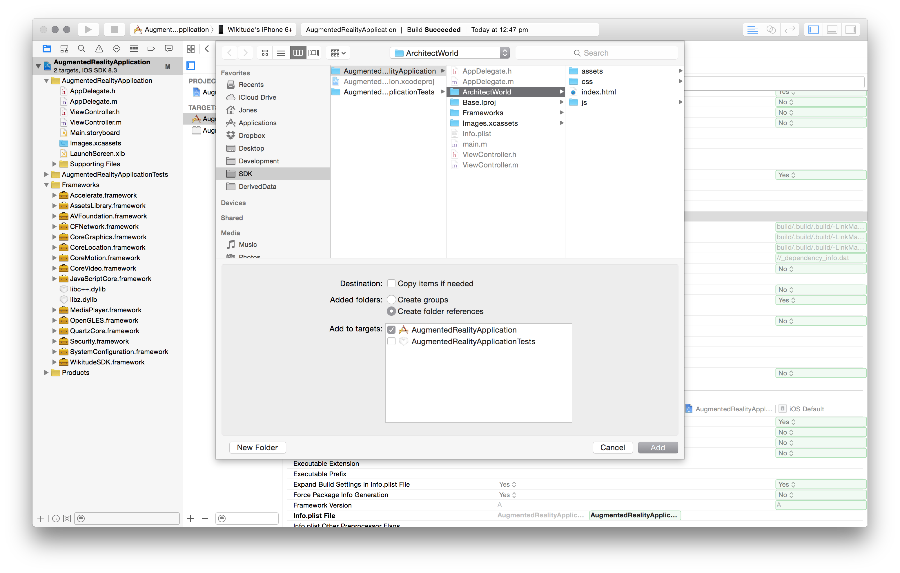
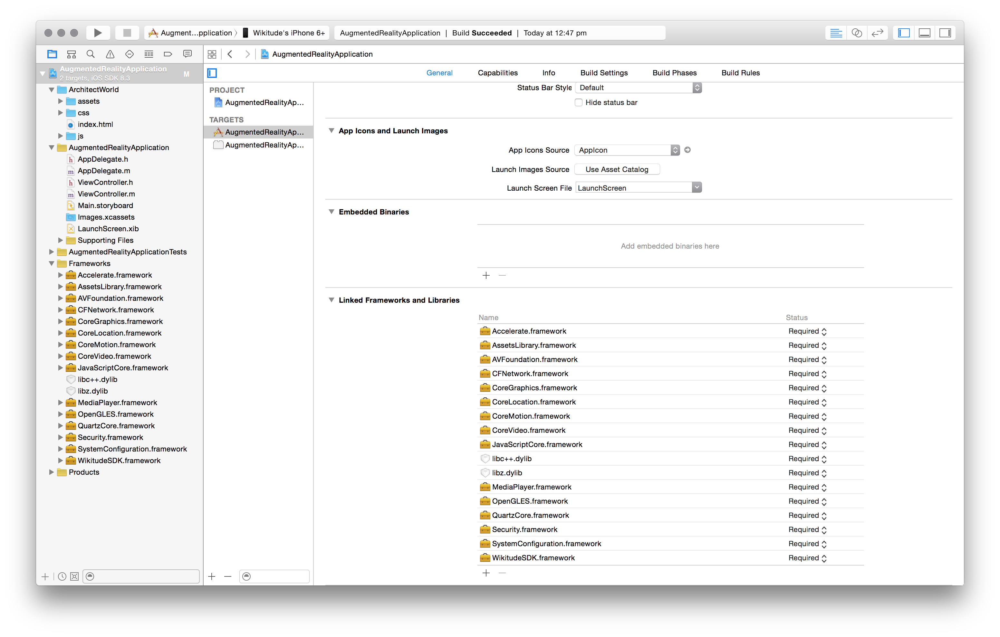

Setup Guide iOS
There are only a few steps necessary to add the Wikitude SDK to your iOS application. This guide will explain them in detail.
Load your Xcode project
The first step is to open an existing Xcode project. If there is no project available, create one using the Xcode project setup wizard.
Adding the Wikitude SDK Framework
At first, create a new directory in your project structure and name it e.g. Frameworks. Copy the downloaded WikitudeSDK.framework into this directory afterwards.

After the Wikitude SDK Framework was copied into an appropriate location, it can be added using the Linked Frameworks and Libraries panel from your targets General project setting.

In the open dialog, navigate to the Framework location and click Open.

Configure Build Phases
Now add all the required iOS Frameworks listed below. You can add them as described above using the Link Binary With Libraries build phase.
- Accelerate.framework
- AssetLibrary.framework
- AVFoundation.framework
- CFNetwork.framework
- CoreGraphics.framework
- CoreLocation.framework
- CoreMotion.framework
- CoreVideo.framework
- JavaScriptCore.framework
- Foundation.framework
- MediaPlayer.framework
- OpenGLES.framework
- QuartzCore.framework
- Security.framework
- SystemConfiguration.framework
- UIKit.framework
Also add the following dynamic libraries
- libc++.dylib
- libz.dylib

The following image shows a project that is properly configured and includes all required Frameworks. 
Configure Build Settings
The Wikitude SDK requires the -ObjC linker flag. Linker flags can be adjusted in the projects Build Settings tab. Search for Other Linker Flags and add a new entry if it does not already exist.

Using the SDK in your Application
After all setup steps are completed, the Wikitude SDK is ready to be used within an iOS application. The class to work with is WTArchitectView. This UIView subclass allows you to load ARchitect Worlds.
Since the Wikitude SDK is a Framework, the header import should look like this: #import <*FrameworkName*/*HeaderFile.h*>. This import is typically done in the UIViewController subclass which manages the WTArchitectView instance.
#import <WikitudeSDK/WTArchitectView.h>
It is common practice to add a WTArchitectView and WTNavigation property to the UIViewController subclass.
@property (nonatomic, strong) WTArchitectView *architectView;
@property (nonatomic, weak) WTNavigation *architectWorldNavigation;
To initialize an instance of type WTArchitectView, use the -initWithFrame:motionManager: method. If the project uses Autolayout, then the frame parameter can be CGRectZero, otherwise the parameter defines the origin and size of the architect view.
If the iOS application has already initialized a CMMotionManager instance, this instance should be passed as motionManager parameter, otherwise this parameter should be nil and the Wikitude SDK will create its own CMMotionManager instance.
The following snippet shows a complete WTArchitectView initialization.
- (void)viewDidLoad
{
// ... other initialization code ...
NSError *deviceNotSupportedError = nil;
if ( [WTArchitectView isDeviceSupportedForRequiredFeatures:WTFeature_Geo | WTFeature_2DTracking error:&deviceNotSupportedError] ) { // 1
self.architectView = [[WTArchitectView alloc] initWithFrame:self.view.bounds motionManager:nil];
self.architectView.delegate = self;
[self.architectView setLicenseKey:@"YOUR_LICENSE_KEY"];
[self.view addSubview:self.architectView];
} else {
NSLog(@"device is not supported - reason: %@", [deviceNotSupportedError localizedDescription]);
}
// ... continue initialization ...
}
Use the
isDeviceSupportedForRequiredFeatures:error:method to determine if the current device is capable of running Architect Worlds with certain feature requirements. See the class reference ofWTArchitectViewfor more information.The
setLicenseKey:method allows you to pass a string containing the trial license key. Read this chapter on how to obtain a free trial key.The WTArchitectView instance needs to be added to the applications view hierarchy.
To start the camera, the WTArchitectViews -start:completion and -stop methods need to be called. The UIViewControllers -viewWillAppear: and -viewWillDisappear: methods can be used for this purpose. If the UIViewController which manages the WTArchitectView, is present at the moment the application will resign active (User pressed the Home button or an UIAlert is shown) or will become active again, the WTArchitectView needs to be started/stopped accordingly.
Note: You can find a Xcode project on GitHub which covers proper WTArchitectView handling in every detail.
Loading an ARchitect World
All the necessary steps to include an ARchitect World into an iOS application are very similar on how to add the Wikitude SDK Framework to an iOS application.
- The ARchitect World files need to be added to the Xcode projects folder structure
- the Xcode project itself and
- finally used within the iOS application.
The following image shows a basic Xcode project structure. A new folder named ArchitectWorld was created and an Architect World was added.

Back in Xcode, the ARchitect World can be added by choosing Add Files to "*Project_Name*" from the File menu.

In the File -> Open dialog, select the main ArchitectWorld folder.
Note: Please make sure to select the Create folder references for any added Folders option. This will copy all the files and subfolders to the applications resource bundle in the same structure. Additionally, any files that will be added later in time are automatically added to the resource bundle when you build your application.

This is how your project should look like after all steps are properly completed. 
Architect Worlds can be loaded using the loadArchitectWorldFromURL:withRequiredFeatures method provided by WTArchitectView. To get the Architect World URL, use NSBundles method -URLForResource:withExtension:subdirectory.
The following listing shows how both methods should be used.
NSURL *architectWorldURL = [[NSBundle mainBundle] URLForResource:@"index" withExtension:@"html" subdirectory:@"ArchitectWorld"];
[self.architectView loadArchitectWorldFromURL:architectWorldURL withRequiredFeatures:WTFeature_Geo | WTFeature_2DTracking];
Note that the required features can be set differently for your project. Depending on what features the Architect World uses, only the necessary features should be passed to this method call.
Typically this will be done when the WTArchitectView instance was created. The -start:completion/-stop and -loadArchitectWorldFromURL:withRequiredFeatures methods do not depend on each other, so the order in which they are called does not matter.
It is not necessary to load the Architect World again if the WTArchitectView will be started again. Loading a new Architect World while another one is already loaded will unload the current Architect World and release all its associated objects and resources.
Your final UIViewController implementation should look like the one in the following image. Of course you can do additional coding in your UIViewController implementation.
//
// ViewController.m
// AugmentedRealityApplication
//
// Created by Wikitude GmbH on 22/04/15.
// Copyright (c) 2015 Wikitude. All rights reserved.
//
#import "ViewController.h"
#import <WikitudeSDK/WikitudeSDK.h>
/* Wikitude SDK debugging */
#import <WikitudeSDK/WTArchitectViewDebugDelegate.h>
@interface ViewController () <WTArchitectViewDelegate, WTArchitectViewDebugDelegate>
/* Add a strong property to the main Wikitude SDK component, the WTArchitectView */
@property (nonatomic, strong) WTArchitectView *architectView;
/* And keep a weak property to the navigation object which represents the loading status of your Architect World */
@property (nonatomic, weak) WTNavigation *architectWorldNavigation;
@end
@implementation ViewController
- (void)dealloc
{
/* Remove this view controller from the default Notification Center so that it can be released properly */
[[NSNotificationCenter defaultCenter] removeObserver:self];
}
- (void)viewDidLoad {
[super viewDidLoad];
// Do any additional setup after loading the view, typically from a nib.
/* It might be the case that the device which is running the application does not fulfil all Wikitude SDK hardware requirements.
To check for this and handle the situation properly, use the -isDeviceSupportedForRequiredFeatures:error class method.
Required features specify in more detail what your Architect World intends to do. Depending on your intentions, more or less devices might be supported.
e.g. an iPod Touch is missing some hardware components so that Geo augmented reality does not work, but 2D tracking does.
NOTE: On iOS, an unsupported device might be an iPhone 3GS for image recognition or an iPod Touch 4th generation for Geo augmented reality.
*/
NSError *deviceSupportError = nil;
if ( [WTArchitectView isDeviceSupportedForRequiredFeatures:WTFeature_2DTracking error:&deviceSupportError] ) {
/* Standard WTArchitectView object creation and initial configuration */
self.architectView = [[WTArchitectView alloc] initWithFrame:CGRectZero motionManager:nil];
self.architectView.delegate = self;
self.architectView.debugDelegate = self;
/* Use the -setLicenseKey method to unlock all Wikitude SDK features that you bought with your license. */
[self.architectView setLicenseKey:@"YOUR_LICENSE_KEY"];
/* The Architect World can be loaded independently from the WTArchitectView rendering.
NOTE: The architectWorldNavigation property is assigned at this point. The navigation object is valid until another Architect World is loaded.
*/
self.architectWorldNavigation = [self.architectView loadArchitectWorldFromURL:[[NSBundle mainBundle] URLForResource:@"index" withExtension:@"html" subdirectory:@"ArchitectWorld"] withRequiredFeatures:WTFeature_2DTracking];
/* Because the WTArchitectView does some OpenGL rendering, frame updates have to be suspended and resumend when the application changes it's active state.
Here, UIApplication notifications are used to respond to the active state changes.
NOTE: Since the application will resign active even when an UIAlert is shown, some special handling is implemented in the UIApplicationDidBecomeActiveNotification.
*/
[[NSNotificationCenter defaultCenter] addObserver:self selector:@selector(didReceiveApplicationWillResignActiveNotification:) name:UIApplicationWillResignActiveNotification object:nil];
[[NSNotificationCenter defaultCenter] addObserver:self selector:@selector(didReceiveApplicationDidBecomeActiveNotification:) name:UIApplicationDidBecomeActiveNotification object:nil];
/* Standard subview handling using Autolayout */
[self.view addSubview:self.architectView];
self.architectView.translatesAutoresizingMaskIntoConstraints = NO;
NSDictionary *views = NSDictionaryOfVariableBindings(_architectView);
[self.view addConstraints: [NSLayoutConstraint constraintsWithVisualFormat:@"|[_architectView]|" options:0 metrics:nil views:views] ];
[self.view addConstraints: [NSLayoutConstraint constraintsWithVisualFormat:@"V:|[_architectView]|" options:0 metrics:nil views:views] ];
}
else {
NSLog(@"This device is not supported. Show either an alert or use this class method even before presenting the view controller that manages the WTArchitectView. Error: %@", [deviceSupportError localizedDescription]);
}
}
#pragma mark - View Lifecycle
- (void)viewWillAppear:(BOOL)animated {
[super viewWillAppear:animated];
/* WTArchitectView rendering is started once the view controllers view will appear */
[self startWikitudeSDKRendering];
}
- (void)viewDidDisappear:(BOOL)animated {
[super viewDidDisappear:animated];
/* WTArchitectView rendering is stopped once the view controllers view did disappear */
[self stopWikitudeSDKRendering];
}
- (void)didReceiveMemoryWarning {
[super didReceiveMemoryWarning];
// Dispose of any resources that can be recreated.
}
#pragma mark - View Rotation
- (BOOL)shouldAutorotate {
return YES;
}
- (NSUInteger)supportedInterfaceOrientations {
return UIInterfaceOrientationMaskAll;
}
- (void)willRotateToInterfaceOrientation:(UIInterfaceOrientation)toInterfaceOrientation duration:(NSTimeInterval)duration {
/* When the device orientation changes, specify if the WTArchitectView object should rotate as well */
[self.architectView setShouldRotate:YES toInterfaceOrientation:toInterfaceOrientation];
}
#pragma mark - Private Methods
/* Convenience methods to manage WTArchitectView rendering. */
- (void)startWikitudeSDKRendering{
/* To check if the WTArchitectView is currently rendering, the isRunning property can be used */
if ( ![self.architectView isRunning] ) {
/* To start WTArchitectView rendering and control the startup phase, the -start:completion method can be used */
[self.architectView start:^(WTStartupConfiguration *configuration) {
/* Use the configuration object to take control about the WTArchitectView startup phase */
/* You can e.g. start with an active front camera instead of the default back camera */
// configuration.captureDevicePosition = AVCaptureDevicePositionFront;
} completion:^(BOOL isRunning, NSError *error) {
/* The completion block is called right after the internal start method returns.
NOTE: In case some requirements are not given, the WTArchitectView might not be started and returns NO for isRunning.
To determine what caused the problem, the localized error description can be used.
*/
if ( !isRunning ) {
NSLog(@"WTArchitectView could not be started. Reason: %@", [error localizedDescription]);
}
}];
}
}
- (void)stopWikitudeSDKRendering {
/* The stop method is blocking until the rendering and camera access is stopped */
if ( [self.architectView isRunning] ) {
[self.architectView stop];
}
}
/* The WTArchitectView provides two delegates to interact with. */
#pragma mark - Delegation
/* The standard delegate can be used to get information about:
* The Architect World loading progress
* architectsdk:// protocol invocations using document.location inside JavaScript
* Managing view capturing
* Customizing view controller presentation that is triggered from the WTArchitectView
*/
#pragma mark WTArchitectViewDelegate
- (void)architectView:(WTArchitectView *)architectView didFinishLoadArchitectWorldNavigation:(WTNavigation *)navigation {
/* Architect World did finish loading */
}
- (void)architectView:(WTArchitectView *)architectView didFailToLoadArchitectWorldNavigation:(WTNavigation *)navigation withError:(NSError *)error {
NSLog(@"Architect World from URL '%@' could not be loaded. Reason: %@", navigation.originalURL, [error localizedDescription]);
}
/* The debug delegate can be used to respond to internal issues, e.g. the user declined camera or GPS access.
NOTE: The debug delegate method -architectView:didEncounterInternalWarning is currently not used.
*/
#pragma mark WTArchitectViewDebugDelegate
- (void)architectView:(WTArchitectView *)architectView didEncounterInternalWarning:(WTWarning *)warning {
/* Intentionally Left Blank */
}
- (void)architectView:(WTArchitectView *)architectView didEncounterInternalError:(NSError *)error {
NSLog(@"WTArchitectView encountered an internal error '%@'", [error localizedDescription]);
}
#pragma mark - Notifications
#pragma mark - Notifications
/* UIApplication specific notifications are used to pause/resume the architect view rendering */
- (void)didReceiveApplicationWillResignActiveNotification:(NSNotification *)notification
{
dispatch_async(dispatch_get_main_queue(), ^{
/* Standard WTArchitectView rendering suspension when the application resignes active */
[self stopWikitudeSDKRendering];
});
}
- (void)didReceiveApplicationDidBecomeActiveNotification:(NSNotification *)notification
{
dispatch_async(dispatch_get_main_queue(), ^{
/* When the application starts for the first time, several UIAlert's might be shown to ask the user for camera and/or GPS access.
Because the WTArchitectView is paused when the application resigns active (See line 86), also Architect JavaScript evaluation is interrupted.
To resume properly from the inactive state, the Architect World has to be reloaded if and only if an active Architect World load request was active at the time the application resigned active.
This loading state/interruption can be detected using the navigation object that was returned from the -loadArchitectWorldFromURL:withRequiredFeatures method.
*/
if ( self.architectWorldNavigation.wasInterrupted )
{
[self.architectView reloadArchitectWorld];
}
/* Standard WTArchitectView rendering resuming after the application becomes active again */
[self startWikitudeSDKRendering];
});
}
@end